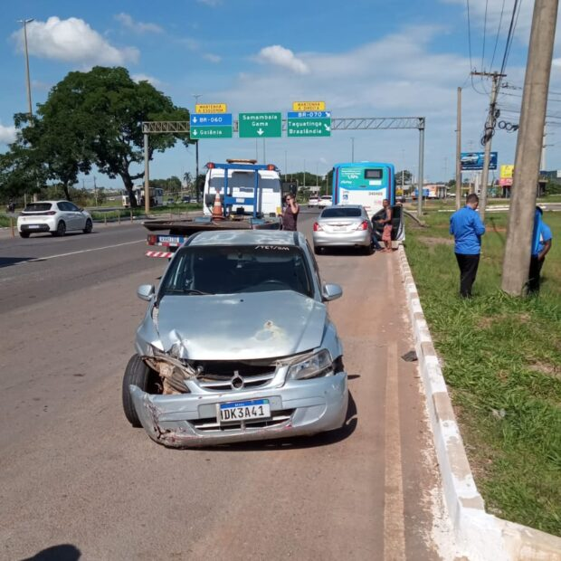
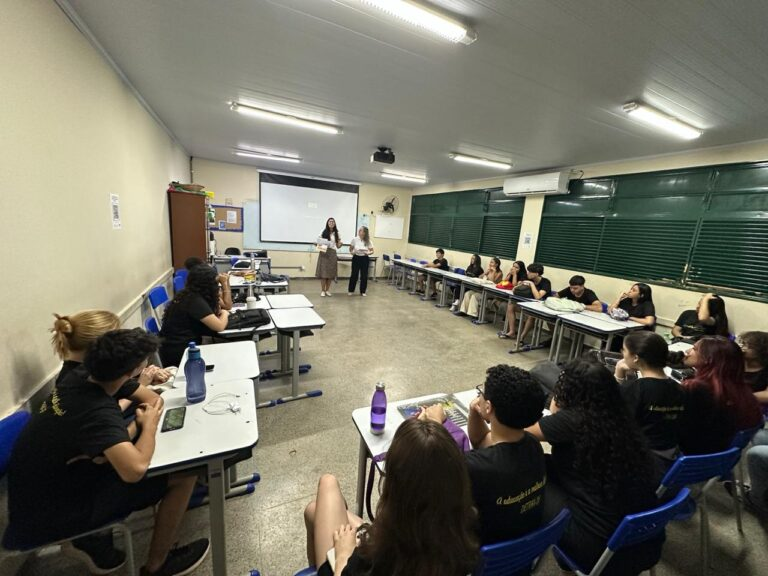

Um Encontro Memorável para os Apaixonados por Veículos Históricos
Brasília se prepara para receber um dos eventos mais aguardados do setor automotivo: a Exposição Nacional de Veículos Históricos. Realizada a cada quatro anos, essa celebração única reúne entusiastas, colecionadores e admiradores de carros clássicos e históricos em um só lugar, transformando a capital em um verdadeiro museu a céu aberto[...]
Defesa Civil abre comportas do Paranoá e alerta para risco de alagamento
Aviso!
Em nota, a Defesa Civil do DF emitiu alerta sobre risco de alagamento com abertura em 60 cm de
comportas do Lago Paranoá, nesta segunda-feira (20/12), sobre risco de alagamentos provocados pela abertura
de 60 cm das comportas do Lago Paranoá durante a tarde. O órgão pede que as pessoas evitem as margens do
rio abaixo da barragem.[...]

Homem embriagado é preso após causar acidente na EPNB
Um homem foi preso em flagrante após
causar acidente na manhã desta segunda-feira (09) na EPNB. Após fazer o teste do etilômetro, foi
constatado
1.05 mg/L de álcool no sangue, quantidade alta e suficiente para acusar embriaguez. A ocorrência foi
atendida por uma equipe do Batalhão de Policiamento Rodoviário (BPRV), batalhão especializado da PMDF.[...]
Homem embriagado é preso após causar acidente na EPNB
Noticia!
Um homem foi preso em flagrante após
causar acidente na manhã desta segunda-feira (09) na EPNB. Após fazer o teste do etilômetro, foi
constatado
1.05 mg/L de álcool no sangue, quantidade alta e suficiente para acusar embriaguez. A ocorrência foi
atendida por uma equipe do Batalhão de Policiamento Rodoviário (BPRV), batalhão especializado da PMDF.[...]

Detran-DF oferece aulas gratuitas de revisão para candidatos à CNH
O Departamento de Trânsito do Distrito Federal (Detran-DF), por meio da Escola Pública de
Trânsito
(EPT), abriu inscrições para aulas gratuitas de revisão voltadas para candidatos à primeira
habilitação.
Com carga horária de 15 horas presenciais, as aulas serão realizadas no sábado (14) e no domingo
(15),
com vagas limitadas a 25 participantes[...]
Detran-DF oferece aulas gratuitas de revisão para candidatos à CNH
Aviso!
O Departamento de Trânsito do Distrito Federal (Detran-DF), por meio da Escola Pública de
Trânsito
(EPT), abriu inscrições para aulas gratuitas de revisão voltadas para candidatos à primeira
habilitação.
Com carga horária de 15 horas presenciais, as aulas serão realizadas no sábado (14) e no domingo
(15),
com vagas limitadas a 25 participantes[...]

Falta de iluminação no Paranoá aumenta insegurança e preocupação
Notícia!
A falta de iluminação no Paranoá, no bairro Jardim Alegre, tem causado medo entre os moradores.
Três postes de luz da região estão apagados há mais de dois meses, transformando o trecho em um local
vulnerável para assaltos e furtos.
[...]

Fux vota pela responsabilização das redes sociais e empresas de
tecnologia pelo
conteúdo que publicam
Notícia!
O STF - Supremo Tribunal Federal retomou nesta quarta-feira (11) o julgamento sobre o Marco
Civil da Internet. O ministro Luiz Fux votou pela responsabilização das redes sociais e empresas
de tecnologia pelo conteúdo que publicam.[...]

Expresso Cultural: Primeira linha de metrô temático de Brasília é
inaugurada
Notícia!
Brasília ganhou um toque de arte e cultura em seus transportes públicos. A nova linha
temática do metrô, chamada de Expresso Cultural, foi
inaugurada nesta quarta-feira (12). Decorada com obras de artistas locais e espaços interativos, a
iniciativa promete transformar o trajeto dos
passageiros em uma experiência única de aprendizado e lazer. [...]